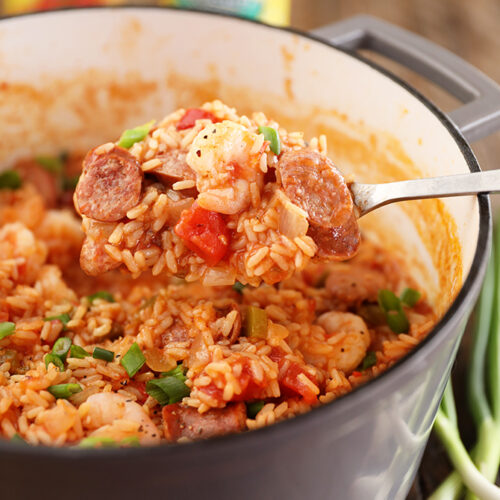

Shrimp Jambalaya

Time for some good ol' southern cookin!
If you're looking for a taste of The South, look no further.
A cajun dish straight from the heart of Louisiana. A mash-up
of African, French, and Spanish influences, it spread far and
wide throughout the southern states and was made a staple of
most households.
Ingredients
- 2 tablespoons vegetable or olive oil
- 1 pound cajun or andouille sausage, sliced into 1/4-inch rounds
- 1 large onion, diced
- 1 large bell pepper, seeded and diced
- 2 ribs celery, diced
- 3 cloves garlic, minced
- 4 cups chicken broth
- 1 (15-ounce) can Red Gold Crushed Tomatoes
- 1 (14.5-ounce) can Red Gold Diced Tomatoes
- 1 teaspoon Creole seasoning
- 2 cups parboiled or converted rice
- sliced green onions for garnish, optional
- 1 pound large shimp, peeled and deveined
Steps
-
Heat the oil in a stock pot or large dutch oven of medium-high
heat. Add the sliced sausage and cook, stirring frequently,
until the sausage has browned. Use a slotted spoon to remove the
sausage to a plate. Set aside.
-
Add the diced onion, bell pepper, and celery. Cook until the
vegetables are tender - about 5 minutes. Add the garlic and
cook for about 1 minute.
-
Add the broth, Red Gold Crushed Tomatoes, and Red Gold Diced
Tomatoes. Add the Creole seasoning. Bring to a boil. Stir in
the rice and browned sausage. Reduce the heat to a simmer and
cover. Cook about 20 minutes, stirring occasionally, until
the rice is tender to your liking. Taste and add additional
Creole seasoning or salt and pepper to your taste. Add the
shrimp and cover. Cook for an additional 3 to 5 minutes or
until the shrimp are pink and cooked through. Allow to rest
for about 5 minutes, then stir and serve topped with sliced
green onions, if desired.